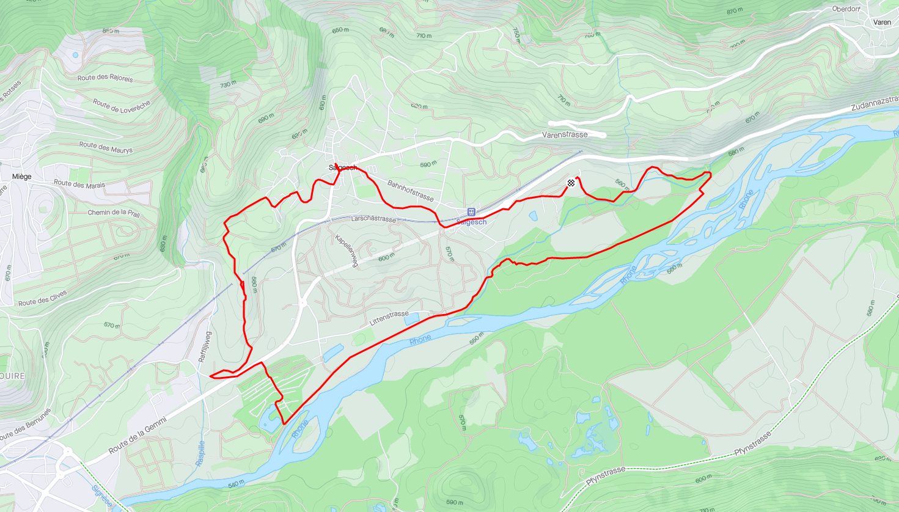
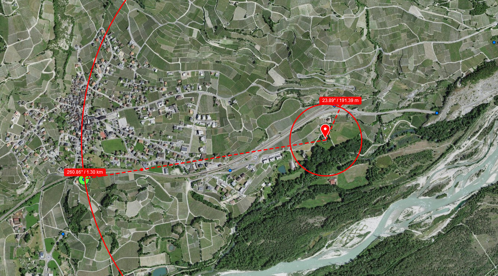

Interessen
Eine Präsentation von Dominik "Domi" Hiltbrunner
Salgesch
Kanton: Wallis (VS)
Bezirk: Leuk
Höhe: 581 m ü. M.
Fläche: 11,36 km²
Einwohner: 1567 (31. Dezember 2020)
Ferienhaus
Garten

Aprikosen

Kartoffeln für Raclette
Gemüse
Obst (Äpfel, Quitten, Zwetschgen, etc)
Pool
Mountainbike

SCOR 4060 ST

Strava Sucht beginnt...
Remote work

Mobile Router
